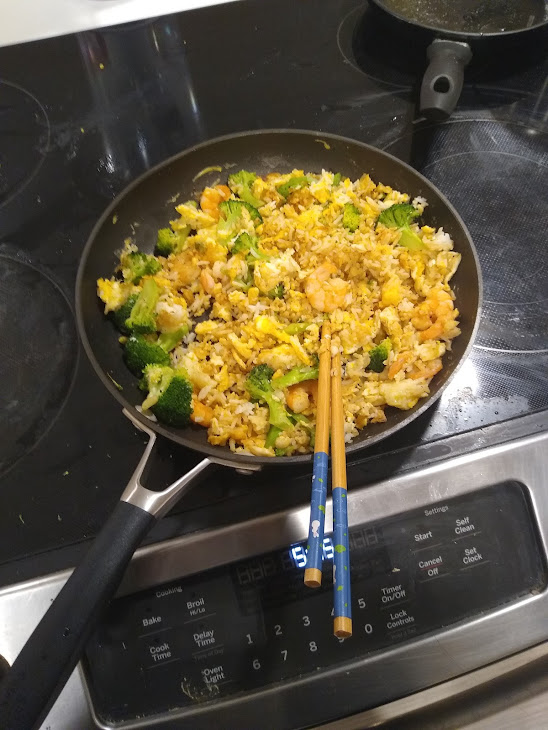

Stirfry Recipe

Description
This is a stirfry recipe that I use a lot. It doesn't take a lot of time or preparation and it tastes pretty good.
I learned most of it from my mom.
Ingredients
- 2 Eggs
- Some cooked rice (a little over 2 cups of cooked rice works, but honestly any amount works
- Broccoli
- Soy sauce, or oyster sauce
- Vinegar
- Chili oil (like laoganma)
- Cooked shrimp
- Garlic
- Garlic powder (optional, but I really like garlic)
- Cooking oil (like olive oil)
- Green onion
Steps
- Put cooking oil in a pan and set it to medium heat.
- Cut the broccoli however you like it.
- Mince the garlic.
- Put the garlic in the pan. The pan should be hot enough that the garlic starts sizzling.
- After a few seconds, add the broccoli. The broccoli should also start sizzling.
- Stir the broccoli and garlic around a little bit.
- As the broccoli and garlic cook, add small amounts of water so they don't burn.
- After a few minutes (less than 5?), or when the consistency is how you like it, take the broccoli and garlic out of the pan and set aside.
- Add extra cooking oil to the pan if necessary.
- Crack in the two eggs and scramble them.
- When the eggs are still sort of gooey and not fully cooked, add the rice.
- Stir the rice and eggs around for several minutes, or until the eggs are almost cooked.
- Add back the broccoli and garlic, and the cooked shrimp.
- Add soy sauce, vinegar, and garlic powder in any amounts.
- Stir together for a few seconds, until the liquids are incorporated.
- Take everything out and put it in a bowl.
- Chop the green onion.
- Put green onion, chili oil, and salt in the food.
Notes
Before you start cooking, you should have cooked rice and cooked shrimp on hand.
Back to home